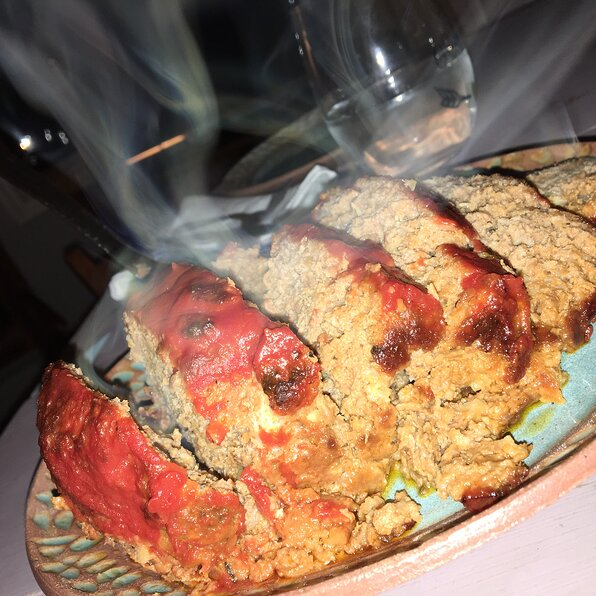

>
meatloaf

Ingredients
- 1 tablespoon butter
- ¼ cup minced onion
- 2 cloves garlic, minced
- 1½ teaspoons salt
- 1½ teaspoons freshly ground black pepper
- 2 pounds extra-lean ground beef
- 3 slices bread, toasted and crumbled
- 7 buttery round crackers, crushed
- 1 egg, lightly beaten
- 3½ tablespoons sour cream
- 1½ tablespoons Worcestershire sauce
- 1 (15 ounce) can tomato sauce, divided
- ¼ cup milk (Optional)
- 3 tablespoons ketchup
Steps
- Preheat oven to 350 degrees F (175 degrees C).
- Melt the butter in a skillet over medium heat, and cook the onion and garlic 5 minutes, until onion is tender. Remove from heat, and season with salt and pepper.
- In a large bowl, mix the onion and garlic, beef, crumbled bread, crushed crackers, egg, sour cream, Worcestershire sauce, and 1/2 can tomato sauce. Gradually stir in the milk 1 teaspoon at a time until mixture is moist, but not soggy. Transfer the mixture to a 5x9 inch loaf pan.
- Bake uncovered in the preheated oven 40 minutes. Increase oven temperature to 400 degrees F (200 degrees C), and continue baking 15 minutes, to an internal temperature of 160 degrees F (70 degrees C).
- In a small bowl, mix the remaining tomato sauce and ketchup. Pour over the top of the meatloaf, and continue baking 10 minutes